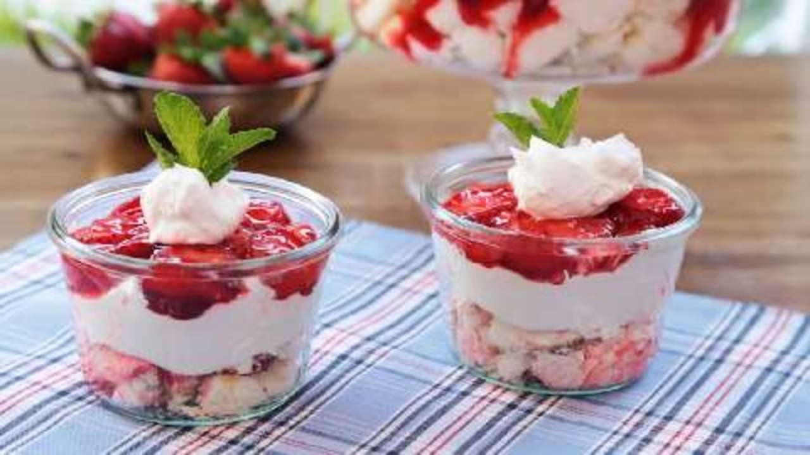

Strawberry-Angel-Food-Desert

Description
Angel food pieces are topped with sweetened cream cheese, whipped topping and strawberries in glaze in this chilled, layered dessert.
Ingridents
- 10 inch angel food cake
- 2 (8 ounce) packages cream cheese, soften
- 1 cup white sugar
- 1 (8 ounce) container frozen whipped topping, thawed
- 1 quart fresh strawberries, sliced
- 1 (18 ounc) jar strawberr glaze
Steps
- Crumble or cut cake into bite-sized pieces. Place in a 9x13 inch dish.
- Beat the cream cheese and sugar in a medium bowl until light and fluffy. Fold in whipped topping. Mash the cake down with your hands and spread the cream cheese mixture over the cake.
- In a bowl, combine strawberries and glaze until strawberries are evenly coated. Spread over cream cheese layer. Chill until serving.